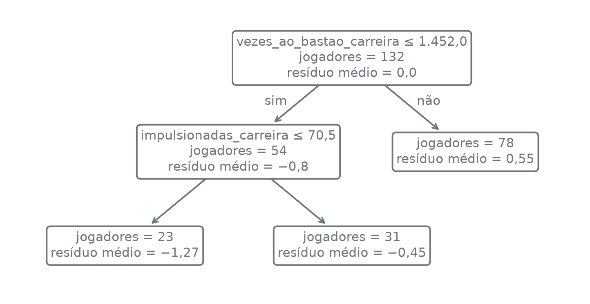

def numero_br(valor, casas=2):
texto = f"{valor:,.{casas}f}"
texto = texto.replace(",", "_").replace(".", ",").replace("_", ".")
return texto.replace("-", "−")Boosting
Nota
Esta seção corresponde à seção 8.2.3 de James et al. (2023).
No bagging e na floresta aleatória, cada árvore é ajustada à sua amostra bootstrap sem saber o que as outras fizeram, e as árvores só se encontram na média do fim. Um jogador cujo salário todas as árvores erram para cima continua errado para cima na média. E se as árvores fossem ajustadas uma depois da outra, e cada árvore nova olhasse só para o que as anteriores ainda erram, corrigindo um pouco?
A função numero_br escreve os números com a pontuação brasileira:
Aprender devagar
Os dados são os jogadores de Hitters com salário registrado, com o logaritmo do salário como resposta, as colunas de texto trocadas por indicadoras e os mesmos 132 jogadores de treino da seção 13.1:
import numpy as np
import pandas as pd
from sklearn.model_selection import train_test_split
hitters = pd.read_csv("dados/Hitters.csv").dropna()
y = np.log(hitters["salario"])
X = pd.get_dummies(hitters.drop(columns="salario"), drop_first=True, dtype=float)
treino_X, teste_X, treino_y, teste_y = train_test_split(
X, y, train_size=132, random_state=12)
print("treino:", len(treino_X))
print("teste:", len(teste_X))treino: 132
teste: 131Uma árvore grande ajustada de uma vez ao log do salário tenta acertar tudo numa só passada e, como a seção 12.2 mostrou, acompanha o ruído do treino. O boosting faz o contrário: começa de um modelo que prevê zero para todo mundo e o melhora aos poucos. A cada passo, calcula o resíduo de cada jogador, o quanto o modelo atual ainda erra, ajusta uma árvore pequena a esses resíduos e soma ao modelo só uma fração dela.
O boosting de árvores de regressão ajusta \(B\) árvores em sequência, cada uma aos resíduos deixados pelas anteriores. Com \(d\), o número de divisões de cada árvore, e \(\lambda\), um número positivo pequeno:
- Comece com \(\hat f(x) = 0\) e com os resíduos \(r_i = y_i\) para todo \(i\) do treino.
- Para \(b = 1, 2, \dots, B\):
- ajuste uma árvore \(\hat f^b\) com \(d\) divisões, isto é, \(d + 1\) folhas, tendo \(r\), e não \(y\), como resposta;
- some ao modelo a árvore encolhida por \(\lambda\), \[\hat f(x) \leftarrow \hat f(x) + \lambda \hat f^b(x);\]
- atualize os resíduos, \[r_i \leftarrow r_i - \lambda \hat f^b(x_i).\]
- O modelo final é a soma das árvores encolhidas, \[ \hat f(x) = \sum_{b=1}^{B} \lambda \hat f^b(x). \]
O parâmetro \(\lambda\) é a taxa de aprendizado (shrinkage, ou learning rate): quanto de cada árvore entra no modelo.
Não há amostra bootstrap: toda árvore vê os 132 jogadores, com uma resposta diferente a cada passo.
O algoritmo se faz à mão com árvores de uma divisão só, \(d = 1\), e \(\lambda = 0{,}01\). O passo 1 põe o modelo em zero e os resíduos no próprio log do salário. O passo 2 começa ajustando a primeira árvore aos resíduos: é um DecisionTreeRegressor com duas folhas, ajustado com residuos no lugar de y. A célula mostra o corte da raiz e, para cada lado do corte, quantos jogadores há, a previsão da árvore, que é a mesma para todos os jogadores do lado, e a média do log do salário deles:
from sklearn.tree import DecisionTreeRegressor
taxa = 0.01
modelo_a_mao = np.zeros(len(treino_X))
residuos = treino_y.to_numpy().copy()
arvore_1 = DecisionTreeRegressor(max_leaf_nodes=2, random_state=13)
arvore_1.fit(treino_X, residuos)
coluna = X.columns[arvore_1.tree_.feature[0]]
corte = arvore_1.tree_.threshold[0]
print("raiz:", coluna)
print("corte:", numero_br(corte, 0))
previsto_1 = arvore_1.predict(treino_X)
abaixo = treino_X[coluna] <= corte
pd.DataFrame({
"jogadores": [abaixo.sum(), (~abaixo).sum()],
"folha da árvore": [previsto_1[abaixo].mean(), previsto_1[~abaixo].mean()],
"média do log do salário": [treino_y[abaixo].mean(), treino_y[~abaixo].mean()],
}, index=["até o corte", "acima do corte"]).style.format(precision=2, decimal=",")raiz: vezes_ao_bastao_carreira
corte: 1.452| jogadores | folha da árvore | média do log do salário | |
|---|---|---|---|
| até o corte | 54 | 5,11 | 5,11 |
| acima do corte | 78 | 6,46 | 6,46 |
arvore.tree_.threshold[0] — o valor de corte da raiz, o nó 0; numa árvore de uma divisão, os jogadores com a coluna até esse valor vão para uma folha, e os outros, para a outra.
A primeira árvore divide os jogadores pelo número de vezes ao bastão na carreira. Como o modelo começa de zero, os resíduos do primeiro passo são o próprio log do salário, e as folhas são a média do log do salário de cada lado do corte: as duas últimas colunas da tabela coincidem em cada linha, 5,11 de um lado e 6,46 do outro.
O resto do passo 2 soma ao modelo um centésimo da árvore e tira o mesmo centésimo dos resíduos:
modelo_a_mao = modelo_a_mao + taxa * previsto_1
residuos = residuos - taxa * previsto_1
mse_1 = np.mean((treino_y.to_numpy() - modelo_a_mao) ** 2)
print("média do log do salário:", numero_br(treino_y.mean()))
print("depois do passo, previsão média:", numero_br(modelo_a_mao.mean()))
print("depois do passo, MSE de treino:", numero_br(mse_1))média do log do salário: 5,91
depois do passo, previsão média: 0,06
depois do passo, MSE de treino: 34,97Só um centésimo da árvore entrou no modelo: depois do primeiro passo, \(\hat f(x)\) vale 0,01 × 5,11 ≈ 0,05 para os jogadores de um lado e 0,01 × 6,46 ≈ 0,06 para os do outro, longe da média de 5,91.
Os passos seguintes repetem as três contas do passo 2, ajustar, somar e atualizar, cada um com os resíduos que o anterior deixou. O laço faz mais dois e guarda os três numa tabela, com o corte e as duas folhas de cada árvore:
linhas = [{"passo": 1, "raiz": coluna, "corte": corte,
"folha até o corte": previsto_1[abaixo].mean(),
"folha acima do corte": previsto_1[~abaixo].mean(), "MSE de treino": mse_1}]
for passo in [2, 3]:
arvore_b = DecisionTreeRegressor(max_leaf_nodes=2, random_state=13)
arvore_b.fit(treino_X, residuos)
previsto_b = arvore_b.predict(treino_X)
modelo_a_mao = modelo_a_mao + taxa * previsto_b
residuos = residuos - taxa * previsto_b
raiz_b = X.columns[arvore_b.tree_.feature[0]]
corte_b = arvore_b.tree_.threshold[0]
abaixo_b = treino_X[raiz_b] <= corte_b
linhas.append({"passo": passo, "raiz": raiz_b, "corte": corte_b,
"folha até o corte": previsto_b[abaixo_b].mean(),
"folha acima do corte": previsto_b[~abaixo_b].mean(),
"MSE de treino": np.mean((treino_y.to_numpy() - modelo_a_mao) ** 2)})
a_mao = pd.DataFrame(linhas).set_index("passo")
(a_mao.style
.format(precision=2, decimal=",", thousands=".")
.format(precision=0, decimal=",", thousands=".", subset=["corte"]))| raiz | corte | folha até o corte | folha acima do corte | MSE de treino | |
|---|---|---|---|---|---|
| passo | |||||
| 1 | vezes_ao_bastao_carreira | 1.452 | 5,11 | 6,46 | 34,97 |
| 2 | vezes_ao_bastao_carreira | 1.452 | 5,06 | 6,40 | 34,28 |
| 3 | vezes_ao_bastao_carreira | 1.452 | 5,01 | 6,34 | 33,60 |
As três primeiras árvores cortam pela mesma coluna, no mesmo ponto: depois de poucos passos de um centésimo, os resíduos ainda se parecem com o próprio log do salário, e o melhor corte continua o mesmo. As folhas encolhem um pouco a cada passo, porque os resíduos encolhem, e o MSE de treino cai devagar.
No scikit-learn, o algoritmo é o GradientBoostingRegressor. Com init="zero", ele começa de \(\hat f(x) = 0\), como no passo 1. A célula ajusta \(B = 1.000\) árvores de uma divisão, com \(\lambda = 0{,}01\), e põe o MSE de treino dos três primeiros passos ao lado da conta à mão. No boosting, estimators_ é uma tabela de árvores com uma linha por passo e uma coluna só, e estimators_[b, 0] é a árvore do passo b + 1:
from sklearn.ensemble import GradientBoostingRegressor
boost = GradientBoostingRegressor(n_estimators=1000, learning_rate=taxa, max_leaf_nodes=2,
max_depth=None, init="zero", random_state=13)
boost.fit(treino_X, treino_y)
for b in range(3):
print(f"árvore {b + 1} do GradientBoostingRegressor, raiz:",
X.columns[boost.estimators_[b, 0].tree_.feature[0]])
pd.DataFrame({"à mão": a_mao["MSE de treino"],
"train_score_": boost.train_score_[:3]}).style.format(precision=4, decimal=",")árvore 1 do GradientBoostingRegressor, raiz: vezes_ao_bastao_carreira
árvore 2 do GradientBoostingRegressor, raiz: vezes_ao_bastao_carreira
árvore 3 do GradientBoostingRegressor, raiz: vezes_ao_bastao_carreira| à mão | train_score_ | |
|---|---|---|
| passo | ||
| 1 | 34,9664 | 34,9664 |
| 2 | 34,2764 | 34,2764 |
| 3 | 33,6002 | 33,6002 |
GradientBoostingRegressor(...) — o boosting de árvores de regressão. Os parâmetros usados aqui:
n_estimators: o número de árvores, \(B\).learning_rate: a taxa \(\lambda\).max_leaf_nodes: o número máximo de folhas de cada árvore;max_leaf_nodes=2dá árvores de uma divisão, \(d = 1\).max_depth: a profundidade máxima de cada árvore, que vale junto commax_leaf_nodes. O padrão, 3, limita cada árvore a 8 folhas; comNone, sómax_leaf_nodeslimita, qualquer que seja \(d\).init: com"zero", o modelo começa de \(\hat f(x) = 0\); sem ele, começa da média de \(y\) no treino.random_state: fixa os desempates.
modelo.train_score_ — no regressor, o MSE de treino depois de cada árvore.
As três árvores do GradientBoostingRegressor cortam pela mesma coluna das três feitas à mão, e o MSE de treino depois de cada passo é o mesmo nas duas colunas. Cada passo tira do resíduo de cada jogador um centésimo da previsão da árvore. Antes de rodar a próxima célula, um palpite: partindo de zero, depois de quantas árvores a previsão média no treino chega perto de 5,91, a média do log do salário? Dez? Cem? Mil? A célula imprime a previsão média e o MSE de treino depois de 1, 10, 100 e 1.000 árvores:
previsoes = list(boost.staged_predict(treino_X))
linhas = []
for b in [1, 10, 100, 1000]:
linhas.append({"B": numero_br(b, 0), "previsão média": previsoes[b - 1].mean(),
"MSE de treino": boost.train_score_[b - 1]})
print("no treino, depois de B árvores:")
pd.DataFrame(linhas).set_index("B").style.format(precision=2, decimal=",")no treino, depois de B árvores:| previsão média | MSE de treino | |
|---|---|---|
| B | ||
| 1 | 0,06 | 34,97 |
| 10 | 0,57 | 29,23 |
| 100 | 3,75 | 5,00 |
| 1.000 | 5,91 | 0,09 |
modelo.staged_predict(X) — as previsões do modelo depois de cada árvore, uma de cada vez: primeiro com a árvore 1, depois com as árvores 1 e 2, e assim por diante até \(B\). Um ajuste só dá a curva inteira contra \(B\); list(...) guarda as 1.000 previsões numa lista.
A célula seguinte procura a primeira árvore depois da qual a média, arredondada, chega à média do log do salário:
alvo = round(treino_y.mean(), 2)
chega = None
for b, previsto in enumerate(previsoes, start=1):
if round(previsto.mean(), 2) >= alvo:
chega = b
break
print("média chega a", numero_br(treino_y.mean()), "em B =", numero_br(chega, 0))média chega a 5,91 em B = 696break — sai do laço na primeira vez que a condição vale; start=1 faz o enumerate contar as árvores a partir de 1.
Dez árvores levam a previsão média a 0,57, e cem, a 3,75. A procura acha a árvore de número 696. O MSE de treino é a média dos quadrados dos resíduos, e cai junto, de 34,97 depois da primeira árvore para 0,09 depois da milésima.
O modelo final é a soma das árvores encolhidas. A célula confere isso nos jogadores de teste: soma as previsões das mil árvores, cada uma multiplicada pela taxa, e põe a soma ao lado do predict:
soma = np.zeros(len(teste_X))
for arvore in boost.estimators_[:, 0]:
soma = soma + taxa * arvore.predict(teste_X.to_numpy())
previsto_boost = boost.predict(teste_X)
print("maior diferença entre a soma e o predict:",
numero_br(np.abs(soma - previsto_boost).max(), 4))
pd.DataFrame({"soma das árvores": soma[:3], "predict": previsto_boost[:3]},
index=["jogador 1", "jogador 2", "jogador 3"]).style.format(precision=4,
decimal=",")maior diferença entre a soma e o predict: 0,0000| soma das árvores | predict | |
|---|---|---|
| jogador 1 | 6,4701 | 6,4701 |
| jogador 2 | 6,2579 | 6,2579 |
| jogador 3 | 5,8882 | 5,8882 |
np.abs(v).max() — o maior valor absoluto.
A soma das mil árvores encolhidas é a previsão do modelo, como no passo 3: as duas colunas da tabela coincidem, jogador a jogador.
O modelo começou de zero e levou centenas de árvores só para chegar ao nível dos salários. O init padrão começa da média do log do salário no treino e poupa esse caminho. A célula ajusta o mesmo boosting partindo da média e compara os dois erros de teste:
from sklearn.metrics import mean_squared_error
da_media = GradientBoostingRegressor(n_estimators=1000, learning_rate=taxa, max_leaf_nodes=2,
max_depth=None, random_state=13)
da_media.fit(treino_X, treino_y)
pd.DataFrame({"MSE de teste": [mean_squared_error(teste_y, previsto_boost),
mean_squared_error(teste_y, da_media.predict(teste_X))]},
index=["partindo de zero", "partindo da média"]).style.format(precision=4,
decimal=",")| MSE de teste | |
|---|---|
| partindo de zero | 0,2905 |
| partindo da média | 0,2905 |
Com \(\lambda = 0{,}01\) e mil árvores, o caminho de zero até a média já foi percorrido, e os dois erros de teste coincidem nas quatro casas.
Três parâmetros: B, λ e d
O boosting tem três parâmetros: o número de árvores \(B\), a taxa \(\lambda\) e o número de divisões \(d\) de cada árvore. Com \(\lambda\) pequeno, cada árvore muda pouco o modelo, e são precisas mais árvores para chegar ao mesmo lugar. Mais árvores sempre melhoram?
Daqui em diante, os modelos partem da média do log do salário no treino, o padrão do scikit-learn. A função curva_de_teste guarda o MSE de teste depois de cada árvore de um modelo, com o staged_predict. A célula ajusta, com árvores de uma divisão, 3.000 árvores para cada \(\lambda\) em 0,001, 0,01 e 0,1:
def curva_de_teste(modelo):
"""O MSE de teste do modelo depois de cada árvore."""
curva = []
for previsto in modelo.staged_predict(teste_X):
curva.append(mean_squared_error(teste_y, previsto))
return np.array(curva)
curvas = {}
modelos = {}
for taxa in [0.001, 0.01, 0.1]:
modelo = GradientBoostingRegressor(n_estimators=3000, learning_rate=taxa,
max_leaf_nodes=2, max_depth=None, random_state=13)
modelo.fit(treino_X, treino_y)
modelos[taxa] = modelo
curvas[taxa] = curva_de_teste(modelo)A tabela resume cada curva: o MSE de teste depois da primeira árvore, o menor MSE e o \(B\) em que ele acontece, e o MSE depois da última árvore:
linhas = []
for taxa, curva in curvas.items():
linhas.append({"λ": str(taxa).replace(".", ","), "em B = 1": curva[0],
"menor": curva.min(), "B do menor": numero_br(np.argmin(curva) + 1, 0),
"em B = 3.000": curva[-1]})
print("MSE de teste, partindo da média:")
pd.DataFrame(linhas).set_index("λ").style.format(
precision=4, decimal=",", subset=["em B = 1", "menor", "em B = 3.000"])MSE de teste, partindo da média:| em B = 1 | menor | B do menor | em B = 3.000 | |
|---|---|---|---|---|
| λ | ||||
| 0,001 | 0,8384 | 0,3027 | 3.000 | 0,3027 |
| 0,01 | 0,8305 | 0,2851 | 635 | 0,3126 |
| 0,1 | 0,7551 | 0,2856 | 51 | 0,3832 |
np.argmin(v) — a posição do menor valor de v, contada a partir de 0; somando 1, o número de árvores. str(taxa).replace(".", ",") — o número como texto, com vírgula no lugar do ponto: 0,001, 0,01 e 0,1.
import matplotlib.pyplot as plt
def uma_casa(valor, posicao):
return f"{valor:.1f}".replace(".", ",")
estagios = np.arange(1, 3001)
fig, ax = plt.subplots(figsize=(3.8, 3.4))
for taxa, cor in [(0.001, "C0"), (0.01, "C1"), (0.1, "C2")]:
nome = str(taxa).replace(".", ",")
ax.plot(estagios, curvas[taxa], color=cor, label=f"λ = {nome}")
melhor = np.argmin(curvas[taxa])
ax.plot(estagios[melhor], curvas[taxa][melhor], marker="x", color=cor,
markersize=8, label="_nolegend_")
ax.plot(estagios, modelos[0.01].train_score_, color="0.45", linestyle="--",
label="treino, λ = 0,01")
ax.set_xscale("log")
ax.set_xticks([1, 10, 100, 1000], ["1", "10", "100", "1.000"])
ax.set_xlim(0.8, 4000)
ax.set_ylim(0, 0.9)
ax.yaxis.set_major_formatter(uma_casa)
ax.set_xlabel("número de árvores B")
ax.set_ylabel("MSE (log do salário)")
ax.legend(loc="lower center", bbox_to_anchor=(0.5, 1.0), ncol=2)
plt.tight_layout()
plt.show()![Gráfico de linhas com o número de árvores, de 1 a 3.000 em escala logarítmica, no eixo horizontal, e o MSE no vertical, com marcas de 0 a 0,8. As três curvas de teste começam entre 0,75 e 0,84. A verde, λ = 0,1, desce primeiro, tem o mínimo perto de 0,29 com cerca de 50 árvores e depois sobe até perto de 0,38. A laranja, λ = 0,01, desce mais tarde, tem o mínimo perto de 0,29 com cerca de 600 árvores e sobe até cerca de 0,31. A azul, λ = 0,001, desce mais devagar e chega perto de 0,30 na última árvore. A cinza tracejada, o treino com λ = 0,01, só desce e termina perto de 0,05, bem abaixo das curvas de teste.](04-boosting_files/figure-html/fig-lambda-output-1.png)
Hitters, partindo da média, contra o número de árvores \(B\), em escala logarítmica, para três taxas de aprendizado: \(\lambda = 0{,}001\) (azul), \(0{,}01\) (laranja) e \(0{,}1\) (verde). O x marca o menor erro de teste de cada curva. Em cinza tracejado, o MSE de treino com \(\lambda = 0{,}01\). O MSE é medido no log do salário.
Com \(\lambda = 0{,}1\), o menor erro de teste chega em \(B = 51\); com \(\lambda = 0{,}01\), em \(B = 635\); com \(\lambda = 0{,}001\), o menor erro está na última das 3.000 árvores. Quanto menor \(\lambda\), mais árvores foram precisas até o menor erro, nos três valores de \(\lambda\) testados.
Os dois menores erros, 0,2856 com \(\lambda = 0{,}1\) e 0,2851 com \(\lambda = 0{,}01\), diferem em 0,0005. Com \(\lambda = 0{,}001\), 3.000 árvores não chegaram lá, e o menor erro ficou em 0,3027.
Na figura, a curva verde desce primeiro e sobe primeiro; a laranja faz o mesmo movimento mais à direita, e a azul ainda está descendo quando as 3.000 árvores acabam. Um \(\lambda\) menor desloca a curva para a direita no eixo de \(B\).
Depois do mínimo, o erro de teste sobe: com \(\lambda = 0{,}01\), de 0,2851 em \(B = 635\) a 0,3126 em \(B = 3.000\); com \(\lambda = 0{,}1\), de 0,2856 a 0,3832. O erro de treino, enquanto isso, só desce, como a linha cinza da figura mostra para \(\lambda = 0{,}01\):
print("λ = 0,01, MSE de treino em B = 3.000:", numero_br(modelos[0.01].train_score_[-1], 4))λ = 0,01, MSE de treino em B = 3.000: 0,0502O erro de teste subindo é compatível com correções que, depois do mínimo, acompanham o que é particular desses 132 jogadores. No boosting, um \(B\) grande demais pode sobreajustar, ao contrário do bagging, em que uma árvore a mais só entra numa média.
Com \(\lambda\) pequeno, o ponto de partida pesa. A célula ajusta de novo o \(\lambda = 0{,}001\), agora partindo de zero, e põe o menor erro de teste ao lado do que partiu da média:
de_zero = GradientBoostingRegressor(n_estimators=3000, learning_rate=0.001,
max_leaf_nodes=2, max_depth=None, init="zero",
random_state=13)
de_zero.fit(treino_X, treino_y)
pd.DataFrame({"menor MSE de teste": [curvas[0.001].min(), curva_de_teste(de_zero).min()]},
index=["partindo da média", "partindo de zero"]).style.format(precision=4,
decimal=",")| menor MSE de teste | |
|---|---|
| partindo da média | 0,3027 |
| partindo de zero | 0,3931 |
Partindo de zero, o menor erro de teste do \(\lambda = 0{,}001\) é 0,3931, contra 0,3027 partindo da média: com um passo de um milésimo por árvore, 3.000 árvores gastam boa parte do caminho só para chegar ao nível dos salários.
Se o menor erro quase não muda entre \(\lambda = 0{,}1\) e \(\lambda = 0{,}01\), o que o \(\lambda\) menor compra? Nestes dados, baixou o menor erro só em 0,0005. Ele anda com um passo mais fino, de um centésimo por árvore, e cobra isso em árvores: o menor erro de teste veio com 635 árvores com \(\lambda = 0{,}01\), contra 51 com \(\lambda = 0{,}1\), e 635 ÷ 51 ≈ 12,5.
O terceiro parâmetro, \(d\), é o tamanho de cada árvore. Uma árvore de uma divisão, \(d = 1\), é um toco (stump). Cada toco usa uma coluna só, e uma soma de tocos é uma soma de funções de uma coluna cada: o modelo é aditivo, sem interação entre as colunas.
Com \(d = 2\), uma árvore pode dividir por uma coluna e depois, num dos lados, por outra, e o efeito da segunda passa a depender do valor da primeira. Como \(d\) divisões usam no máximo \(d\) colunas, \(d\) controla a ordem das interações que o modelo pode capturar, e é chamado de profundidade de interação. A célula ajusta, com \(\lambda = 0{,}01\) e 3.000 árvores, o boosting com \(d = 2\) e \(d = 4\) e compara com os tocos já ajustados:
por_d = {1: modelos[0.01]}
for d in [2, 4]:
por_d[d] = GradientBoostingRegressor(n_estimators=3000, learning_rate=0.01,
max_leaf_nodes=d + 1, max_depth=None,
random_state=13)
por_d[d].fit(treino_X, treino_y)
linhas = []
for d, modelo in por_d.items():
curva = curva_de_teste(modelo)
folhas_por_arvore = []
for arvore in modelo.estimators_[:, 0]:
folhas_por_arvore.append(arvore.get_n_leaves())
linhas.append({"d": d, "folhas por árvore": ", ".join(map(str, np.unique(folhas_por_arvore))),
"menor teste": curva.min(), "B do menor": numero_br(np.argmin(curva) + 1, 0),
"treino em 3.000": modelo.train_score_[-1]})
raizes = set()
for arvore in por_d[1].estimators_[:, 0]:
raizes.add(X.columns[arvore.tree_.feature[0]])
print("colunas usadas pelos tocos:", len(raizes), "de", X.shape[1])
pd.DataFrame(linhas).set_index("d").style.format(
precision=4, decimal=",", subset=["menor teste", "treino em 3.000"])colunas usadas pelos tocos: 18 de 19| folhas por árvore | menor teste | B do menor | treino em 3.000 | |
|---|---|---|---|---|
| d | ||||
| 1 | 2 | 0,2851 | 635 | 0,0502 |
| 2 | 3 | 0,2775 | 329 | 0,0067 |
| 4 | 5 | 0,2861 | 282 | 0,0002 |
set() e conjunto.add(valor) — um conjunto, que guarda cada valor uma vez só; len conta os valores distintos.
Com max_leaf_nodes=d + 1 e max_depth=None, toda árvore tem \(d + 1\) folhas: 2, 3 e 5. Os 3.000 tocos, juntos, usam 18 das 19 colunas, mas cada toco usa só uma.
A primeira árvore de \(d = 2\) mostra a interação. A figura desenha essa árvore com o plot_tree, e a função em_portugues, parecida com a da seção 12.1, troca os termos em inglês e escreve os números com a pontuação brasileira. Cada folha mostra o resíduo médio dos jogadores que chegam a ela, que é a previsão da árvore:
import re
from sklearn.tree import plot_tree
def numero_da_caixa(achado):
"""Reescreve um número do texto do plot_tree com a pontuação brasileira."""
texto = achado.group()
valor = float(texto) + 0.0 # + 0.0 troca o −0,0 por 0,0
return numero_br(valor, len(texto.split(".")[1]))
def em_portugues(caixas):
"""Traduz o texto das caixas que o plot_tree desenha."""
for caixa in caixas:
texto = caixa.get_text()
texto = texto.replace("samples", "jogadores").replace("value", "resíduo médio")
texto = texto.replace("<=", "≤").replace("True", "sim").replace("False", "não")
caixa.set_text(re.sub(r"-?\d+\.\d+", numero_da_caixa, texto))
fundo = caixa.get_bbox_patch()
if fundo is None:
caixa.set_zorder(200) # "sim" e "não" por cima das caixas
else:
fundo.set(facecolor="white", edgecolor="0.45")fig, ax = plt.subplots(figsize=(6.4, 3.2))
caixas = plot_tree(por_d[2].estimators_[0, 0], feature_names=list(X.columns),
impurity=False, rounded=True, precision=2, fontsize=8, ax=ax)
em_portugues(caixas)
plt.show()
plot_tree(arvore, feature_names, impurity, rounded, precision, fontsize, ax) — desenha a árvore ajustada e devolve a lista das caixas de texto. feature_names dá os nomes das colunas; impurity=False omite o erro de cada nó; precision é o número de casas decimais; rounded=True arredonda os cantos das caixas; fontsize é o tamanho da letra.
Na primeira árvore de \(d = 2\), os jogadores com até 1.452 vezes ao bastão na carreira são divididos de novo por impulsionadas_carreira, e os de mais de 1.452 não: o efeito de impulsionadas_carreira nessa árvore existe só de um lado do primeiro corte. É uma interação entre as duas colunas, que nenhuma soma de tocos representa.
Os menores erros de teste ficam em 0,2851 com \(d = 1\), 0,2775 com \(d = 2\) e 0,2861 com \(d = 4\). Entre \(d = 1\) e \(d = 2\), a distância é de 0,2851 − 0,2775 = 0,0076, medida em 131 jogadores de uma divisão só, e não basta para dizer que as interações ajudam.
O que muda claramente é o treino: depois de 3.000 árvores, o MSE de treino cai de 0,0502 com tocos para 0,0067 com \(d = 2\) e 0,0002 com \(d = 4\). Árvores maiores decoram o treino mais depressa, e o valor de \(d\), como o de \(B\) e o de \(\lambda\), é para escolher com dados de fora do ajuste.
Escolher B por validação cruzada
O \(B\) de menor erro de teste, 635 com \(\lambda = 0{,}01\) e tocos, foi escolhido olhando os jogadores de teste, e por isso o erro de teste nesse \(B\), 0,2851, é otimista como estimativa do erro em jogadores novos. O \(B\) se escolhe no treino, por validação cruzada; um grupo da validação cruzada por extenso está na seção 13.2.
Um ajuste de 3.000 árvores por grupo basta: o staged_predict dá o erro do grupo de validação depois de cada árvore. A célula usa 5 grupos, com \(\lambda = 0{,}01\) e tocos, e tira a média das cinco curvas:
from sklearn.model_selection import KFold
grupos = KFold(n_splits=5, shuffle=True, random_state=13)
curva_cv = np.zeros(3000)
for dentro, fora in grupos.split(treino_X):
modelo = GradientBoostingRegressor(n_estimators=3000, learning_rate=0.01,
max_leaf_nodes=2, max_depth=None, random_state=13)
modelo.fit(treino_X.iloc[dentro], treino_y.iloc[dentro])
curva_grupo = []
for previsto in modelo.staged_predict(treino_X.iloc[fora]):
curva_grupo.append(mean_squared_error(treino_y.iloc[fora], previsto))
curva_cv = curva_cv + np.array(curva_grupo) / 5
teste_001 = curvas[0.01]
B_cv = np.argmin(curva_cv) + 1
B_teste = np.argmin(teste_001) + 1
entre = curva_cv[min(B_cv, B_teste) - 1:max(B_cv, B_teste)]
print("CV entre os dois B, de", numero_br(entre.min(), 4), "a", numero_br(entre.max(), 4))
linhas = []
for rotulo, B in [("escolhido pela CV", B_cv), ("menor teste", B_teste), ("uma árvore", 1)]:
linhas.append({"B": rotulo, "número de árvores": numero_br(B, 0),
"CV": curva_cv[B - 1], "teste": teste_001[B - 1],
"teste − CV": teste_001[B - 1] - curva_cv[B - 1]})
pd.DataFrame(linhas).set_index("B").style.format(
precision=4, decimal=",", subset=["CV", "teste", "teste − CV"])CV entre os dois B, de 0,1957 a 0,2000| número de árvores | CV | teste | teste − CV | |
|---|---|---|---|---|
| B | ||||
| escolhido pela CV | 1.307 | 0,1957 | 0,2919 | 0,0962 |
| menor teste | 635 | 0,1998 | 0,2851 | 0,0853 |
| uma árvore | 1 | 0,7414 | 0,8305 | 0,0891 |
fig, ax = plt.subplots(figsize=(3.8, 3.4))
ax.plot(estagios, curva_cv, color="C0", label="validação cruzada")
ax.plot(estagios, teste_001, color="C1", label="teste")
ax.plot(B_cv, curva_cv[B_cv - 1], marker="x", color="C0", markersize=8, label="_nolegend_")
ax.plot(B_teste, teste_001[B_teste - 1], marker="x", color="C1", markersize=8,
label="_nolegend_")
ax.set_xscale("log")
ax.set_xticks([1, 10, 100, 1000], ["1", "10", "100", "1.000"])
ax.set_xlim(0.8, 4000)
ax.set_ylim(0, 0.9)
ax.yaxis.set_major_formatter(uma_casa)
ax.set_xlabel("número de árvores B")
ax.set_ylabel("MSE (log do salário)")
ax.legend(loc="lower center", bbox_to_anchor=(0.5, 1.0), ncol=2)
plt.tight_layout()
plt.show()![Gráfico de linhas com o número de árvores, de 1 a 3.000 em escala logarítmica, no eixo horizontal, e o MSE no vertical, com marcas de 0 a 0,8. As duas curvas descem juntas até algumas centenas de árvores. A de teste, laranja, tem o mínimo perto de 0,29 com cerca de 600 árvores e sobe devagar até perto de 0,31. A de validação cruzada, azul, fica abaixo da de teste em todo o eixo: começa perto de 0,74, e a partir de algumas centenas de árvores fica quase plana, perto de 0,20, até o fim, com o mínimo perto de 1.300.](04-boosting_files/figure-html/fig-cv-output-1.png)
A validação cruzada escolhe \(B = 1.307\). Nesse \(B\), o erro nos 131 jogadores de teste é 0,2919, acima do menor erro de teste, 0,2851 em \(B = 635\), por 0,2919 − 0,2851 = 0,0068. A CV escolhe com os 132 jogadores de treino, e o \(B\) que acerta melhor esses 131 jogadores de teste só é conhecido depois de olhar para eles.
Entre os dois valores de \(B\), a curva de CV quase não se move: vai de 0,1957 a 0,2000. Em \(B = 635\) ela vale 0,1998, e em \(B = 1.307\), 0,1957, uma diferença de 0,1998 − 0,1957 = 0,0041.
O MSE de CV no \(B\) escolhido, 0,1957, fica bem abaixo do erro de teste nesse \(B\), 0,2919, e quase toda essa distância vem da divisão. Na figura, a curva de CV fica abaixo da de teste em todo o eixo, inclusive em \(B = 1\), antes de qualquer escolha: a tabela mostra 0,7414 contra 0,8305. Com uma divisão só, os 131 jogadores de teste podem ser mais difíceis de prever que os 132 de treino: a seção 13.3 viu, nessa mesma divisão, o erro OOB também abaixo do de teste.
O otimismo de ficar com o menor de 3.000 erros estimados com os mesmos 132 jogadores, que a seção 12.2 viu na poda, existe, mas pesa pouco aqui: ficar com o mínimo baixou a CV em 0,0041 em relação a \(B = 635\).
Em classificação, o boosting segue a mesma ideia, cada árvore corrigindo o que as anteriores ainda erram, com uma conta mais complicada para o resíduo; no scikit-learn, é o GradientBoostingClassifier, que volta na seção 13.6.
James, Gareth, Daniela Witten, Trevor Hastie, Robert Tibshirani, e Jonathan Taylor. 2023. An Introduction to Statistical Learning with Applications in Python. Springer.